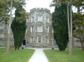
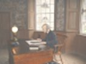
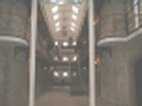
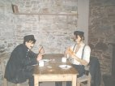

A Tour of Cork City Gaol

When visiting Cork City Gaol, one is greeted by an ominous looking building. Upon entry, a walkman and a tape are provided and this guides you through the gaol and it's history. Tours are provided by the staff by arrangement if preferred. Life size models of the prisoners, wardens and governor have been created to make the tour all the more realistic.

The governor is discovered sitting at his desk in the first room on the right as you enter the building. This is where prisoners are brought when they first entered the gaol.

As the tour continues, you are guided through to the area where prisoners are held. Women were held on the lower floor and men on the upper. Prisoners were forced to pray for their crimes in the hope that it might cleanse there soul. They were also made leave their clothes outside the cell door at night to lessen the chance of them escaping.

The wardens quarters are found just beyond the cells. They are provided with a warm fire and a comfortable living environment where they can play cards and relax. The tour finishes with an impressive movie that tells the story of different prisoners and their experiences in the gaol.
~Previous~ ~Home~ ~Next~